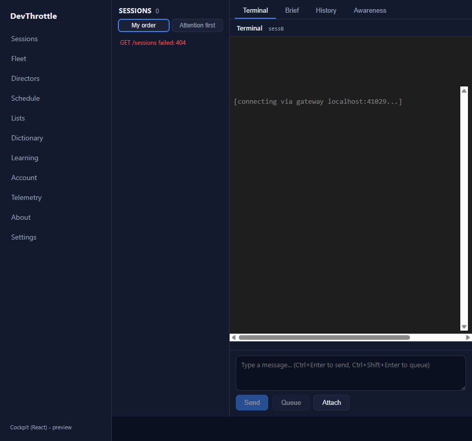

Branch: issue-1029-xterm-lifecycle Epic: #967 (holistic QA sweep) Severity: minor
Mounting or disposing the React Cockpit terminal pane threw an uncaught
TypeError: Cannot read properties of undefined (reading 'dimensions') from xterm's
renderer, on every session load and every session switch (amplified by React 18 StrictMode's
synchronous double-mount). Non-fatal - the terminal still renders - but it pollutes the console and
could trip a global error boundary or telemetry.
xterm's Viewport.reset() and Terminal.open() each queue an internal
requestAnimationFrame(() => this.syncScrollArea()) whose handle xterm does NOT retain,
so it cannot be cancelled. syncScrollArea reads the render service's dimensions
(this._renderer.value.dimensions). The engine calls term.reset() on every
connect and first byte, and term.open() on start. Disposing the terminal synchronously
tears the render service down while that frame is still queued, so when the frame later fires it reads
dimensions off an undefined render service and throws.
File: packages/client-core/src/terminal/interactive.ts
start() no longer opens xterm synchronously. It
waits one animation frame for the host element to have a non-zero measured size, then opens once.
Under StrictMode's throwaway double-mount the pane is disposed before that frame runs, so
dispose() cancels the pending bring-up and no terminal is ever opened for the throwaway
mount.dispose() closes the WebSocket and clears timers
synchronously, then defers term.dispose() by exactly one animation frame. Animation-frame
callbacks run in registration order, so any xterm frame queued before it (the un-cancellable
syncScrollArea) flushes first on the still-live terminal, and only then is the terminal
disposed. The queued frame never runs against a torn-down render service.This is a root-cause fix, not a swallow: the pending xterm callback is allowed to run on a live terminal (its intended state) rather than being caught and ignored.
| Criterion | Result | Evidence |
|---|---|---|
| Loading a session and rapidly switching between two sessions produces ZERO uncaught page errors (add a check that fails on the current code and passes after). | MET |
Automated regression test packages/client-core/src/terminal/interactive.test.ts
(describe "xterm lifecycle safety (issue #1029)") models xterm's reset -> rAF -> dimensions
contract. Run against the unfixed interactive.ts it fails with the exact
TypeError: Cannot read properties of undefined (reading 'dimensions'); against the fix
all 14 tests pass. Live in a real browser (Vite dev server, StrictMode on, driven by Playwright):
identical 8-cycle load/switch loop produced 16 uncaught 'dimensions' errors
on the old code and 0 on the fixed code.
|
| The terminal still renders, types, and reconnects correctly. | MET |
Live: the terminal mounted on all 8 cycles and rendered the bounded-reconnect status line
[connecting via gateway localhost:41029...] (see screenshot). Typing (raw-byte forward
with appendEnter:false) and in-order keystroke serialization remain covered by the existing unit
tests, all still green.
|
| Full build gate clean (cockpit build, lint, Gateway RunCockpitBuild, cc-director.sln). | MET | See build gate below - all four pass with 0 errors. |
OLD code (origin/main interactive.ts):
{"dim":16,"all":16,"cycles":8,"mounts":8,"mountedAtEnd":true,"path":"/session/sessB", ... "dimensions" x16}
FIXED code:
{"dim":0,"all":0,"cycles":8,"mounts":8,"mountedAtEnd":true,"path":"/session/sessB","sample":[]}
Harness: cockpit Vite dev server (React StrictMode active), driven by Playwright. An uncaught-error
collector (window 'error' + 'unhandledrejection') is installed, then the app is driven
through 8 load/switch cycles - each returns to the roster (terminal fully unmounted) then opens a
session, alternating two session ids - covering both the "every session load" and "every session
switch" paths.

| Gate | Command | Result |
|---|---|---|
| Regression + unit tests | vitest run src/terminal/interactive.test.ts | 14 passed |
| client-core typecheck | tsc --noEmit | 0 errors |
| Cockpit build | npm run build --workspace @devthrottle/cockpit | built |
| Lint | npm run lint (root eslint) | clean |
| Gateway + cockpit embed | dotnet build CcDirector.Gateway -p:RunCockpitBuild=true | 0 Warning, 0 Error |
| Full solution | dotnet build cc-director.sln | 0 Warning, 0 Error |
No drift. This is a client-side lifecycle correctness fix inside an existing container
(packages/client-core terminal engine, consumed by the Cockpit). It changes no
architecture boundary, no security posture, and no docs/cencon/ manifest. No blocking
security rule (DT-01..DT-NN) is touched - the engine still talks only same-origin to the Gateway.
packages/client-core/src/terminal/interactive.ts - deferred bring-up + deferred teardown.packages/client-core/src/terminal/interactive.test.ts - animation-frame driver, xterm
lifecycle contract in the fake terminal, and the new "xterm lifecycle safety (issue #1029)" tests.I believe this is finished.